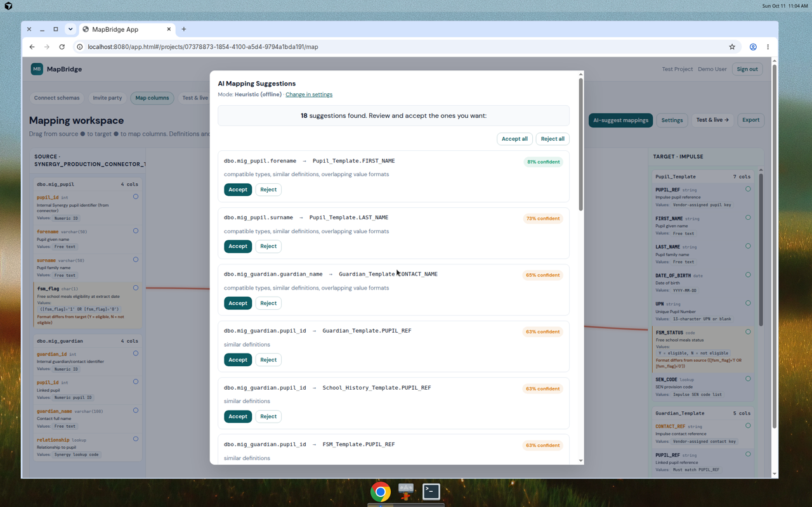

We run your move to a new finance, HR, housing or case system end to end. Every field matched, tested and signed off.

Most problems start with the data and with nobody owning the whole journey.
The contract ends before anyone has decided what to do.
Old and new supplier each own half. Your team is stuck in the middle.
Codes and fields don't match, and it is found after go-live.
From the day you know your contract is ending to signed-off proof after go-live.
Extend, re-procure or move?
MapBridgeEvery service area signed up
Test bidders on your real fields
Match, test, retest every field
MapBridgeSigned-off record, then hand over
MapBridgeCase Study · UK Council
months from procurement to go-live
people, 12-month project
months live after 4 months
A 30-minute call. You leave with a rough plan and the questions to ask your supplier.
Our tool for matching every old field to the new system, with a record of who checked what.
Works today · matching, translations, sign-off, starter SQL, read-only connector
Coming next · shared workspace, data checks, reconciliation
For a typical project with about 800 fields, we estimate:
An estimate, not a promise. We do not have enough projects with MapBridge yet to promise a number. See how we worked it out →
We only ever see field names and types. Never people's records.
I run Foam Works Digital. I specialise in product-led transformation for councils and businesses replacing mission-critical systems.
Previously Acting Head of Product at Ocado Technology, and product transformation roles at Investec. Recent work includes council migrations at Caerphilly and other public bodies.
No. We help you and your supplier agree which fields match. Your supplier writes the queries that move the data.
No. MapBridge only needs the list of field names and types. It does not need to see any employee names, salaries, or other personal data.
In your web browser on your computer. Not on a server. When you close the browser, the data stays on your computer unless you clear your browser data.
We work with finance, HR, housing, CRM, care and schools systems. The read-only connector supports SQL Server and Oracle. For other systems, we upload field lists as CSV or JSON.
It depends on the size of your system and how much time you have before go-live. A typical project is 6 to 12 months. Start before your contract ends if you can.